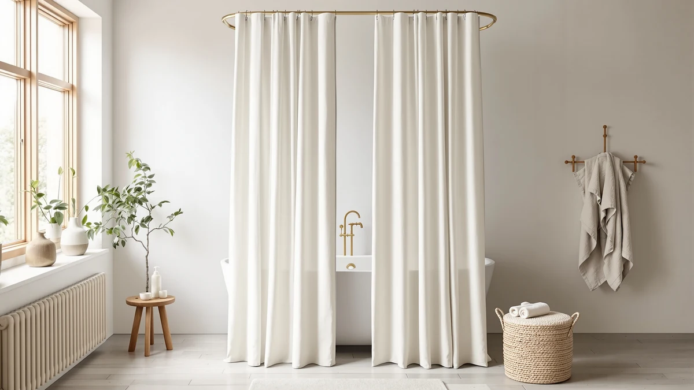

jinchan Lined Linen Curtains Review (2026): Worth It?
Prices and picks verified as of November 2026. Independent, reader-supported reviews.


Quick Answer
This jinchan lined linen curtains review compares the JINCHAN Lined Linen Curtains Light, a $49.62 pack of two 50 inch wide by 108 inch long panels, against three similarly priced alternatives on size, material and price. JINCHAN's extra-long panels suit a tall window or shower enclosure, while ANRODUO's single extra-long panel, Jolilight's cream two-panel set and BTTN's wide boho curtain each solve a different sizing or budget need.
Our pick: JINCHAN Lined Linen Curtains Light, $49.62 Check Price on Amazon
Bottom line: our top pick is the JINCHAN Lined Linen Curtains Light Filtering Back Tab 50x108 at $49.62.
Things to Know Before You Buy
- The JINCHAN Lined Linen Curtains Light ships as two 50 inch wide by 108 inch long panels, 36 inches taller than the standard 72 inch curtain length, a format this extra-long curtain review tracks across every pick.
- At $49.62 for the pair, it works out to about $24.81 per panel, more than ANRODUO's $44.99 single panel, Jolilight's $37.99 two-panel cream set and BTTN's $36.99 wide boho curtain.
- "Linen" in the name describes the woven look, not the fiber: the panels use a polyester and PEVA blend, the same material basis as the other three curtains in this linen-look curtain comparison.
- None of the four curtains compared here publishes a star rating or review count, so there is no verified review history to lean on for any of them yet.
- JINCHAN sells its panels as a matched pair rather than a single wide sheet, which changes how you hang it compared to BTTN's one-piece 108 inch wide curtain.
This jinchan lined linen curtains review looks at a two-panel set, each panel 50 inches wide by 108 inches long, and asks whether its $49.62 price and extra-long format justify choosing it over three similarly styled alternatives.
We compared its listed dimensions, material and price against ANRODUO's extra-long sage green panel, Jolilight's cream two-panel set and BTTN's wide boho scalloped curtain, three curtains in a similar price band. The comparison isn't a simple swap: JINCHAN's two 50 inch panels combine for roughly 100 inches of width at 108 inches tall, while BTTN ships a single 108 inch wide panel at a standard 72 inch height, so each curtain answers a different sizing question depending on what your window or shower actually needs.
Why You Should Trust Us
Ilane Tall covers bathroom textiles and shower hardware for Best Shower Curtains, and this jinchan lined linen curtains review follows the same research process used across the site: comparing manufacturer specs, current Amazon pricing and verified owner feedback instead of running a physical testing lab. We do not own a set of these curtains, and we do not claim hands-on use of any curtain covered here. Instead, we pull the listed size, material, price and panel count straight from the retailer, then weigh those figures against what verified buyers report after living with comparable linen-look and extra-long curtains. You can read the full methodology behind every review on this site on our how we research page, and we used that same approach for this review.
How We Compared
Our process for this jinchan lined linen curtains review starts with each manufacturer's own listing: size, material, panel count and price, checked against the three comparison curtains on the same points. From there, we read through the patterns in verified owner reviews on comparable linen-look and extra-long curtains to see how two-panel sets, scalloped hems and heavier polyester-PEVA blends tend to hold up once they're hanging in a real window or shower. We did not buy, hang or inspect any of the four curtains ourselves. None of the four listings in this comparison publishes a star rating or review count, so we weighed specs and pricing against each other rather than leaning on a review tally that doesn't exist yet for any of them.
Overview & Specs

JINCHAN Lined Linen Curtains Light
What we like
- Ships as two 50 inch wide by 108 inch long panels, 36 inches taller than a standard 72 inch curtain, built for a tall window or enclosure
- Polyester and PEVA blend lining gives the panels more body than a single-layer sheet, without needing a separate liner behind them
- Selling as a matched pair means you can hang both panels on a single wide rod or split them across two windows
Flaws but not dealbreakers
- At $49.62 for the pair, it's the most expensive option in this comparison, costing more per curtain than ANRODUO, Jolilight or BTTN
- The listing doesn't publish a star rating or review count, so there's no verified review history to weigh against the other three curtains here
| Material | Polyester / PEVA |
| Size | 50"W x 108"L (Pack of 2) |
JINCHAN builds this set around two choices: a tall 108 inch panel length, 36 inches more than the 72 inch size most curtains use, and a two-panel format instead of a single wide sheet. Each panel measures 50 inches wide, so hanging both together covers roughly 100 inches, close to the 108 inch width BTTN's single-panel curtain covers on its own in this comparison. The fabric is a polyester and PEVA blend, the same material basis as the other three curtains compared here, despite "linen" appearing in the product name. At $49.62 for the pair, it's priced above ANRODUO's $44.99 single panel, Jolilight's $37.99 two-panel set and BTTN's $36.99 wide curtain.
Panel count is the practical difference worth weighing before you buy. A two-panel set like this one splits more naturally across a double window or a wide shower rod with a center overlap, while BTTN's single 108 inch panel covers the same width in one piece with no seam down the middle. If your window or enclosure is taller than standard, the extra 36 inches of length here does real work. If it's a standard 72 inch height, you'll likely need to hem both panels or accept pooling at the bottom, the same tradeoff ANRODUO's extra-long panel carries in this comparison.
What We Liked
The clearest strength in this jinchan lined linen curtains review is length. JINCHAN's 108 inch panels give you 36 extra inches over a standard 72 inch curtain, which matters if your window or shower rod sits higher than usual. Selling the set as two 50 inch panels also adds flexibility that a single wide curtain doesn't offer: you can center them on one wide rod with an overlap, or split them across two separate openings. The polyester and PEVA blend adds enough body that the panels don't look like a thin sheet, and that same material basis is shared by every curtain in this comparison, so the choice between them comes down to size and price rather than fabric quality.
What Could Be Better
Price is the biggest drawback here. At $49.62 for the pair, JINCHAN costs more than every other curtain in this jinchan lined linen curtains review, including ANRODUO's extra-long single panel at $44.99. The 108 inch length also only pays off for a window or enclosure taller than standard. A standard 72 inch height leaves you hemming both panels or living with fabric pooling at the bottom, and the listing doesn't mention either option. JINCHAN also doesn't publish a star rating or review count, so you have no third-party review history to check against the other three curtains, each of which carries the same gap.
Who Is It For?
The JINCHAN Lined Linen Curtains Light set fits a window or shower with real extra height to cover, a tall enclosure or a rod mounted well above standard, since the 108 inch length only earns its price in that specific situation. It also suits anyone who prefers hanging two separate panels over one continuous sheet, whether that's for a double window or a wide rod with a center overlap. A two-panel pair also makes it easier to work around a window frame, corner post or other obstacle that a single wide sheet would have to clear in one piece. If your space is closer to standard height, or $49.62 is more than you want to spend without a published review history, compare it against ANRODUO's extra-long panel, Jolilight's cream two-panel set or BTTN's wide boho curtain below. Anyone furnishing more than one window or bathroom can also browse our best extra-long curtains roundup for more picks sized the same way.
Alternatives to Consider
If JINCHAN's $49.62 price or its 108 inch length doesn't match what you need, these three alternatives solve different problems. ANRODUO offers the same extra-long format at a lower price, Jolilight matches JINCHAN's two-panel format at a lower price, and BTTN swaps extra length for extra width.

Also Great
ANRODUO Sage Green Extra Long
Priced $4.63 below JINCHAN, ANRODUO's sage green panel matches the extra-long format with a single panel instead of a pair, so you give up the two-panel flexibility but pay less for the added length.
$44.99
Check Price on Amazon
Also Great
Jolilight 2 Panels Set Cream
At $37.99, Jolilight undercuts JINCHAN by nearly $12 while keeping the same two-panel format in a cream colorway, making it the cheaper choice if panel count matters more to you than the extra 36 inches of length.
$37.99
Check Price on Amazon
Best Value
BTTN 108x72 Boho Scalloped Linen
The least expensive option in this comparison at $36.99, BTTN trades JINCHAN's extra height for extra width, shipping a single 108 inch wide by 72 inch long panel with a scalloped boho edge instead of two tall panels.
$36.99
Check Price on AmazonHow long is the JINCHAN Lined Linen Curtains Light panel?
Each panel measures 50 inches wide by 108 inches long, and the set ships as two panels, 36 inches taller than the standard 72 inch curtain length.
What is the JINCHAN curtain made of?
It's a polyester and PEVA blend.
Frequently Asked Questions
How long is the JINCHAN Lined Linen Curtains Light panel?
Each panel measures 50 inches wide by 108 inches long, and the set ships as two panels, 36 inches taller than the standard 72 inch curtain length. That extra length suits a tall window or shower enclosure, not a wide opening.
What is the JINCHAN curtain made of?
It's a polyester and PEVA blend. "Linen" in the product name describes the woven look, not the fiber, since the panels contain no woven linen.
Is the JINCHAN Lined Linen Curtains Light worth it compared to ANRODUO, Jolilight and BTTN?
This jinchan lined linen curtains review found it priced higher than all three alternatives, at $49.62 against ANRODUO's $44.99, Jolilight's $37.99 and BTTN's $36.99. The extra height and two-panel format justify the price only if your window or shower needs the full 108 inches of length; otherwise one of the three cheaper alternatives covers a standard height for less.
Final Verdict
This jinchan lined linen curtains review comes down to one tradeoff: extra length versus price. JINCHAN is the only curtain here sold as two 50 inch wide by 108 inch long panels, and that height and pair format come at the highest price in the comparison, $49.62. ANRODUO matches the extra-long format for $4.63 less with a single panel, Jolilight matches the two-panel format for nearly $12 less, and BTTN undercuts all three at $36.99 by swapping extra height for extra width. None of the four publishes a star rating, so there's no review history to lean on for any of them. For a tall window or enclosure where the two-panel format is a plus, the JINCHAN Lined Linen Curtains Light is worth the higher price. For a standard height space or a tighter budget, ANRODUO, Jolilight or BTTN each cover a different need for less.